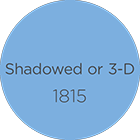
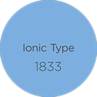
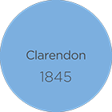 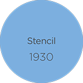
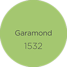 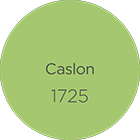
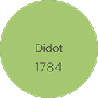
![Although these great leaps in technology have allowed us to communicate with the rest of the world in an instance, have they really helped improve our communication skills? I feel that these advancements were crucial to our development but do wonder if these advancements within communication are actually hindering our communication with someone face to face and that the definition of communicating with another person has, over time, come to mean something entirely different, even changing what is considered a friendship; as I reflect on the means of communication within the past and think of the time and effort that was needed just to communicate with one another, a sincere action, involving laboriously handwriting a message to be walked to the nearest post office and a duty to be paid on postage for the message, which is lost with the ease and the lack of thought required to carry out such a response today, with the availability of mobile phones and the internet.](images/u62679-4.png)
![The meaning of 'communication' has constantly changed and evolved with new advancements and technologies; early forms of communication including handwriting and early printed means had a strict set of rules to adhere to, the most important was legibility, but with time has adapted and developed into an art form, the rules and boundaries of which are constantly being tested by modern artists, so at the present day it is entirely possible to communicate effectively within printed means with no sense of legibility. This art form is engaging and exciting as it allows room for experimentation and progression of the art movement and would not have been possible without many of the advancements which came before it.](images/u62728-4.png)
![After the invention of moveable type within Europe around 1440, the originators to this new art naturally looked at past examples for inspiration, which were formal manuscript hands in a style we now recognise as Gothic or Blackletter. Gothic was a name given by the Renaissance humanists in response to the angular and heavy style of writing. Despite the fact that printing from moveable type made professional copyists redundant, the earliest printed books left spaces for initials, marginal decorations and line finishings, in hope that their work would be seen as that of a scribes, who’s work was completed in such a manner by illuminators. One of the most renowned books to be printed using Blackletter is the Gutenberg Bible.](images/u1989-4.png)
![German printers rapidly spread the new art all over Europe, the sack of Mainz in 1462 accelerated the process as it wiped out all commerce, causing many printers who were established there to scatter across Europe. Many printers relocated to Italy, which had seen the birth of the Renaissance within the prior century. Renaissance humanists rejected the gothic hand which many classical works were copied in and much preferred the script in which many of the works were written; a clear, regular hand which was perfected centuries earlier within the reign of Charlemagne. This style of writing is easily recognizable as the beginning of what we know as upper and lower case.](images/u1992-4.png)
![In 1495 Aldus Manutius, who was a scholar fascinated by the editing of Greek texts established a printing press in Venice. That year an issue of a tract by Pietro Bembo, a Renaissance humanist, was printed in a variation of the roman letter; this is what Stanley Morison believes as ‘the origin of all old-faces’. In the early years the type was marred by large capitals and poor cutting, but with time comes improvement making the type more beautiful; the capitals smaller, upper and lower case are lighter and improved cutting allows for crisper letters. Aldus has been named as the greatest of all the Venetian printer-publishers, one of the first and most famous type-cutters who used Aldus’s letter as a model was Claude Garamond.](images/u1977-6.png)
![Previously in history we had learnt that some type had been derived from beautiful scripts, which were then used by the printers as a model for their type, this is another. When formal hands were written quickly, all of the text reacted to this speed; ‘o’s because elliptical, there were tendencies for ligaturing, letter shapes were simplified and for many the tendency was for these hands to incline to the right, with these characteristics we have the start of what we refer to as italic type. Aldus was not only a printer and publisher but was also a businessman; wishing to print editions of classics in small editions he searched for space saving possibilities. Aldine Italics were based on the Chancery hand and within 1500; the first of all italic typefaces was cut.](images/u8653-4.png)
![The sixteenth century is known as ‘the age of italics’ due to their great popularity at the time, many books being printed wholly in italic type. Up until 1524 the inclined lower case letters were paired with roman capitals; some attempt was made to redesign the capitals, which later led to swash capitals, and sloped capitals became the norm. For a considerable period italics were regarded as type in its own right, however in time was not used to publish complete books but ‘for preliminary matter, citation, and emphasis’, however at the end of the sixteenth century books of verse, which were set completely in italics, were still common. Although many still viewed roman and italic type as entirely separate, the Egenolff-Berner foundry of Frankfurt displayed an example of roman type followed by an example of italic type on the same specimen sheet.](images/u8656-4.png)
![In 1640, Louis XIII of France established a Royal Printing House, evoking greater interest in printing standards. For the first two years the printing press employed the use of the Garamond faces, but later used type designs by Jean Jannon of Sedan. No significant deviation from the old-face type appeared until 1692 when Louis XIV ordered the commission for a series of type by Grandjean, exclusive to the Royal Printing House. This series had distinct changes from the type before it with; vertical strokes, more pronounced contrast between the thick and thin stroke, although the printing process held these advancements back.](images/u8659-4.png)
![In the first half of the seventeenth century, italics appeared which were known for their condensation, an effect which was partly due to the romanisation of certain letters. Pierre Simon Fournier remarked on how greatly his designs differed from previous designs. This new type was to some extent based on the formal scripts of engravers, it also had been influenced somewhat by Grandjean and other successors. This italic type shows great differentiation between thick and thin strokes but also an innovation of a serif treatment for some letters, for example; m, n, p & r. All letters are inclined and bracketed; Fournier even made the inclination of the italic type more regular and disbanded the use of ligatures.](images/u8662-4.png)
![Fournier, who was a pioneer in cutting decorative letters, produced the first shaded types, which were presented at several sizes in his Manuel Typographique of 1764-66. Later, shaded versions were included with faces cut for advertising but the use of shaded type as a decorative piece was disused and were rarely used for the next 100 years. The simplest form of shaded type employs the use of a single white line offset to one side of the character but more usually the left hand side. This type is sometimes referred to as hand-tooled, a term which most likely originates from the process to tool the white lines on the type. There is another form of shaded type which most likely originates from the former styles from the early 19th century, which has become to be known as Inline; examples vary within the design but a common factor is a white line which runs down the centre of the thick stem of the characters, this line can even cut through the serif at the head and foot.](images/u8665-4.png)
![The evolution of roman type from old face to modern face is more one of technique, mechanical improvements made to the printing press and changes to paper texture allowed printers to produce techniques, which just would not have been possible using earlier processes. Despite foundries being forbidden to copy the romain du Roi (French for "King's roman"), thin, flat serifs and vertical shading in capitals can be frequently seen in examples from the first half of the eighteenth century. It was not until 1784 that the first modern face appeared. It was cut in the type-foundry of F.A.Didot, a famous family of Parisian founders and printers. It was presented in a prospectus which announced a work of Tasso’s, F.A.Didot printed the book on an improved press and also used wove paper. Both advancements left a sharper impression of the type, which was necessary for the development of modern faces; the thin strokes finally becoming hairlines.](images/u8668-4.png)
![Vincent Figgins first showed the earliest example of this group of type in a specimen book from 1815, under the name of Antique. Although Robert Thorne has been acclaimed with the credit for this development, many contemporary writers do not agree. Before his death in 1820 Thorne had already cut and set up specimens in which the type was named Egyptian. William Thorowgood, who was neither a founder nor a printer, purchased Thorne’s foundry in 1820 and used the settings, which Thorne had created. The most reasonable explanation for the name Egyptian appears to be due to the great fascination of Egypt within the early nineteenth century.](images/u8671-4.png)
![The first sans serif was displayed as a single line specimen, labelled Egyptian, in 1816 within William Caslon IV’s specimen book; these specimens appeared again in 1819 but then no more specimens were found until unrefined letterforms appeared under the name of sans serif, within Vincent Figgin’s specimen book of 1832. That same year specimens were released under the title ‘grotesque’ in a specimen book belonging to William Thorowgood, many more curious names were coined for this new type style. Most of the early forms of sans serif were used for titling, they were often heavy and consisted of a uniform width, a trait which derived from the ‘modern’ face. Lighter variations were later created and although no lower-case sans serif letters were cut before the 1870s in England, they were in use in America and Germany long before then; the Schelter & Giesecke foundry designed and issued such type in 1830.](images/u19925-4.png)
![As all novelty was exhausted from the modern letter, which had been inherited from Grandjean to Fournier, Bodoni and the Didots, the typefounders of the nineteenth century then experimented with colour. This type group was exploited and pushed to the point of illegibility. By the middle of the nineteenth century the Victorian typefounders, the first shadowed types were available around 1815, had produced an eclectic range of quirky letters, fat faces, egyptians and sans serifs all in shadowed form.](images/u8680-4.png)
![Although shaded types were used profusely within the advertising sector, the first typefaces, which were cut specifically for this purpose, are what we know as Fat Faces. The first step towards this type was the introduction of normal letters, which were enlarged beyond the size of normal book type. Edward Rowe Mores claims that the innovation was thanks to an English typefounder, Thomas Cottrell, his book of 1765 depicts a twelve-line pica letter. This idea was then reproduced by other foundries, causing letters to grow bigger and fatter. Fat Faces were originally known as fat types and probably included types from other groups, for example Egyptian (Antique).](images/u8701-6.png)
![This group of typefaces originate from the early nineteenth century, the first examples were created by reversing Egyptians, Fat Faces and Tuscans which consisted of white characters on a black background. The first examples of this type group were seen in Thorowgood’s specimens of 1928, which used a reversed Egyptian italic, and Bower & Bacon whom created a four-line specimen in 1830; using reversed Fat Face capitals. In contrast to modern examples, the early examples are formed of a continuous background with no lines which separate individual letters. This category of typography embarked on a fairly brief period of popularity, being almost almost out of use 40 years after their creation.](images/u19931-6.png)
![The name Ionic appears to have derived from early Victorian founders and was used as another name for Egyptian type. A specimen created by Blake and Stephenson in 1813 is a modified form of the earliest examples of Egyptian type. Once this specimen is compared with those of Figgins and of Thorne, the differences included more bracketed and less slab like serifs, greater contrast in stroke weight and lighter, smoother cutting are evident, displaying the differences in these two type groups. The fonts within this group were originally display fonts but later were primarily used within newspapers, other uses include Bible printing, magazines and advertising. Present day versions have been adapted specifically for use within newspaper printing, composing of large x-heights with short ascenders and descenders, open counters and slightly bracketed serifs.](images/u19943-4.png)
![The first Clarendon, which was a modified letter of Egyptian styling, was registered by W. Thorowgood and Co. in 1845, but as soon as the copyright period of three years had expired, the market was overwhelmed with poor piracies and imitations. The earliest Ionic faces were bold display types, but while they were later adapted for use in newspaper printing, Clarendons as a group have remained heavy typefaces which main use was to make a distinction between words in works of reference. This group gained such popularity it became a synonym for bold or heavy set types and became a generic name for bold compositon-sized faces by many old established printers. The type now mainly consists of condensed faces.](images/u19946-4.png)
![Examples of stencil type can only been found from the twentieth century, despite the great advances made within the Industrial Revolution it does not appear that the Victorians experimented with type of this design, however, it is possible that this type could have been accidentally cut. Most examples of stencil type which modern typographers would recognise date from the early 1930s. While the type was being used for stencil plates, for manufacturers to mark cases of produce for export, a thin strip of metal was left to support the counters of certain letters, any type which imitates stencilled typography employs this technique, in some cases the band can form the whole counter of certain characters.](images/u19949-4.png)
![Bembo is classified as a Venetian Humanist Serif; it dates back to 1495 and was designed and cut by Franceso Griffo for his employer, the renowned Aldus Manutius. The type face was first used by the scholar Pietro Bembo, who at the time was young and respected he later became Cardinal Bembo, in a small book about his visit to Mount Etna. The fonts restoration and digitalisation was carried out by Monotype and over seen by Stanley Morrison. It is widely used today, particularly within books for its consistency in; colour, texture, legibility and use of space within large bodies of text.](images/u1417-6.png)
![The font is named after Claude Garamond, who first created the designs in 1532. It was later discovered, in 1926 by Beatrice Warde, that many designs thought to have been designed by Garamond were designs by Jean Jannon who had worked closely with Garamond. Jannons’ designs were created up to 80 years after Garamond, so many variations were created on what was believed to be Garamond but was Jannon, so many designs are confused with the other. This confusion continues today; as most of the major type foundries have created revivals of the font there are many different variations which exist, all with greatly different x-height, cap height and thickness. Due to the consistent and relatively large x-height, within Garamonds’ many designs, it is often used for type setting. The font was also the first of the classic typefaces which were revived by Monotype in the 1920s.](images/u1428-4.png)
![The creation of Plantin was inspired and influenced directly by the great collection of type which the sixteenth-century printer Christophe Plantin collected over his years and was named after him to honour his contribution. The font is used widely within book design ; it has a large x-height making it easily legible yet is narrow set which makes it economical in its use. No one designer can be attributed with the creation of Plantin but Frank Hinman Pierpont is regarded as a key founder as he oversaw the fonts development. Pierpont was working for Monotype as the time and wished to create a font which would print on coated and un-coated paper while remaining a high level of legibility. He visited the Plantin-Moretus Museum in Antwerp which displayed a wealth of inspirational designs. Plantin was inspired by the work of Robert Grunion and many others, who were inspired by Claude Garamonds’ designs, Plantin later influenced the design and development of Times New Roman.](images/u19965-4.png)
![William Caslon first designed the font in 1725, the font was based on Dutch type designs from the late 17th century. It was released in many variations by the Caslon Foundry and Caslon’s type designs initiated a revival in British typographic standards. For 300 years the font has maintained popularity throughout that time and has been used for many great works of literature and documents of great historical importance, such as the American Declaration of Independence of 1776, for its simplicity and legibility. William Caslon first began in trade as a gunsmith and an engraver, he began designing his first fonts in the 1720s. His first typefaces were in Arabic but he soon began experimenting with Roman type designs. Caslons’ design has continually been revived and updated with the current technologies available.](images/u19971-4.png)
![This font was first designed in 1757 by John Baskerville, who began as a writing master in Birmingham and later established himself as a printer. Throughout his life, Baskerville strived to improve printing and typography with innovations in the printing press, inks and papers, later creating his own typeface which has generous proportions, with wide and open characters. At first his design received criticism as readers at the time were not used to the finer serifs used with an increased contrast within the character strokes, which were made possible by innovations which included wove paper. Unable to achieve commercial success, his widow sold the original punches in the year 1779 to Beaumarchais, which eventually found their way to Deberny & Peignot, a French foundry who later returned them to England in 1953.](images/u19974-4.png)
![Didot influenced the development of Bodoni, which was designed around 1785 by Giambattista Bodoni who was an innovative printer and type designer from Italy. This font has been a popular choice for fashion journals and fashion houses and was also used for the Victoria & Albert Museum logo. Despite being revived various times, each design while varying in detail from the original, maintains essential characteristics of the font which precede from the original, these include; extreme contrast between the thicks and thins of strokes, the stress is vertical with flat, unbracketed and sharply cut serifs. This font is one where the evolution of typography is evident; the calligraphic approaches that had existed were being replaced with structure and a geometric purity.](images/u19983-4.png)
![Didot, as with other fonts created at a similar time as Bodoni, mark the arrival of ‘Transitional’ type design which was made possible because of improvements in punch-cutting, printing techniques, inks and paper production which all allowed the introduction of much greater contrast in stroke weight along with greater detail and refinements added which pushed the limits of technical advancement. The font was used extensively, as the French standard, for over a century after appearing 5 years before the industrial revolution it reflected a fresh and modern look. It began to lose favour in the late 19th century but after Deberny & Peignot purchased the original punches and revived the design, the font soon began to gain popularity within magazine design; in the early 1990s a vital element of Harper’s Bazaar’s radical redesign which included a digital version of Didot, which had been redrawn by Jonathan Hoefler & Frere-Jones.](images/u19980-4.png)
![Akzidenz-Grotesk was first created during the years 1896-99 and is considered to be one of the most influential sans serif-typefaces, it is even claimed to be the ‘original’ sans serif: it was the inspiration for Helvetica and Futura, and also informed many other sans serif typefaces for more than 50 years after its creation. Its design was informed by Royal Grotesk from the 1880s. The characters are formed of strokes with subtle variation of width, making the font softer and have more character than its peers. The font was first a collection of different faces created by various designers from different foundries causing the different versions to vary in point size and more. It was later that Gunter Gerhard Lange, who was the art director of H. Berthold AG. type foundry, revised the typeface increasing its flexibility and consistency within its design, whilst maintaining the fundamental features displayed amongst the original nineteenth-century designs.](images/u19986-4.png)
![Edward Johnston, renowned as a master calligrapher, created this font in 1918, which he drew for the London Underground and which still continues to be one of most effective and widely loved typographic identities. The design should also in-part be attributed to Eric Gill, for he was Johnston’s student and contributed to drawing up the designs, although Eric Gill was heavily influenced by his teacher, Johnston, whose influence is evident in the design of Gill Sans. The font was modelled on an ancient Roman antecedent which are the letters around the base of Trajan’s Column, which employed classical Roman proportions. The font is still in use on the Underground today, although it has been revived with an extra weight (light) added.](images/u19989-4.png)
![In 1929 the Times newspaper invited Stanley Morrison to present some ideas for newspaper design, after he had written an article which was critical. Times New Roman was developed to be useable in every aspect of the newspaper in a vast range of type sizes, employing the use of short ascenders and defenders to save space, and was first used in the newspaper in 1932. Stanley Morrison oversaw the development of the font which was drawn by Victor Lardent, inspiration for the type was taken from Plantin by Robert Granjon. When the newspaper moved from a broadsheet to a smaller tabloid format an improved version had to be developed. Due to the fonts legibility and versatility it is popular within journals and books. The design is so fit for purpose that in 1946, Peggy Lang a design critic, wrote about how people who suffer from poor eye sight could begin reading the newspapers.](images/u19998-12.png)
![Futura was designed by Paul Renner, the font was commissioned by the Bauer Type Foundry, it was released in 1927. The characters are distinguishable by their distinctive geometric quality, Renner had a principled constructivist belief which meant he thought that a modern typeface should be based on simple shapes including; circles, triangles and squares. This way of design had to comply with the foundry’s goal of creating a practical and useable font. They worked together with Renner’s early sketches and composed a solid, practical and versatile typeface family which quickly gained wide-spread popularity due to its crisp, near-perfect design which out-performs other geometric typefaces with its simplicity and timelessness. The font has been used on many corporate identities, products, films and adverts and due to its extensive range of weights and styles which is preferred by a large number of designers, and was even used for the engraving on the plaque which was sent to the moon.](images/u19992-4.png)
![Max Miedinger and Edouard Hoffman designed this famous and easily recognisable typeface in 1957, which was issued by the Swedish type foundry Haas. The typeface was based on Akzidenz Grotesque and was first released as Haas Grotesque but was later renamed in the early 1960s, as Linotype later adopted the font, to Helvetica which is latin for ‘Swiss’. It was created at a time when the postwar industrial world was being transformed by Swiss Modernism. It maintains its continuing international popularity due to its clear-cut and legible characters though some designers regard it as bland but can’t deny its usefulness. In 1983 the typeface was once more redesigned and released as Neue Helvetica, which was a much larger font family containing 51 fonts in 9 weights and made use of the numbering system which was first exhibited by Univers.](images/u20004-4.png)
![This influential sans serif typeface was first designed by Adrian Frutiger in 1957. It was the first font family to use a numbered system to label its 21 variations, as the font was based on a system of sizes and weights. This system is arranged similarly to the periodic table in which the numbers document the fonts weight and width. The font was inspired by Akzidenz Grotesque, using even strokes which have a large x-height causing its legibility to be increased even at vastly different font sizes. The simplicity and and rationality of the typeface, combined with the many available variations made it one of the most popular postwar typefaces. It was one of the first sans serifs developed for use in a long text setting, to made the font extremely versatile. Frutiger worked together with Linotype in 1997, the redesign had been expanded to 63 fonts, with a third digit added to the numbering system.](images/u20007-4.png)
![Optima is a sans serif typeface which was designed in 1958 by Herman Zapf, which can be characterised by its strokes which widen at the ends. Zapf described the font as a “serifless Roman”, it was inspired by plaques which were carved into Italian gravestones dating from the 1530s. The font was originally cut by August Rosenberger, a punch cutter at the D. Stemple AG foundry in Frankfurt. The font is composed of simple, elegant and clean strokes and uses classical Roman proportions. These attributes make the font versatile, being used for display, headline and text settings, being used on many products and still a popular choice amongst memorials and carvings. In 2002, Herman Zapf revisited his designs with Akira Kobayashi of Linotype: together they revived the typeface and released it under the name of Optima Nova which consisted of additional weights. Due to advances within digital technology, additional character sets were created which were to replace the original sloped Romans.](images/u20001-4.png)
![This typeface was originally produced as the standard font for London & North Eastern Railway, by Eric Gill in 1928. The font was first designed as a hand painted font for a bookshop sign in Bristol, and Eric Gill later studied under Edward Johnston, having some input on Johnston Sans whose influence is evident. It is often described as a geometric sans serif because of the round ‘o’ but isn't necessarily of that group. In the late 1920s, Stanley Morrison–Monotype, commissioned Eric Gill to develop his concepts into a full font family. Eric Gill strived to improve on Johnston Sans, aiming to create the perfect sans serif. Its versatility as both a display and text typeface expanded its success: its clean cut lines and modern aesthetic reflect the change at that time. The font is still used today and can be seen within the BBC logo.](images/u19995-4.png)

![Before digital communication and the near thoughtless process of sending someone an email or a text message, the only form of message for centuries was a letter. In the early days of sending letters you would need to use a homing pigeon, which the small paper message was rolled up and tied to the animals leg. In 1516 the Royal Mail first emerged and was founded by King Henry VIII. At this time, the King’s Posts were crucially dependent on horses for swift delivery timings. Charles I did not open the first public postal service until 1635, this process consisted of letters being carried between posts by mounted post-boys and were then delivered to the local postmaster. Despite being a slow process it remained largely unchanged for 150 years. By 1660 a postal service known as the Royal Mail was established, built on the distribution system for royal and government documents, due to the network of Post Offices the public could easily send and receive letters. It was not until 1852 that the first pillar-box was introduced and meant that people did not have to travel as far to send letters, but were not painted bright red until 1874. This form of communication was essential for many centuries, with a rich history and has become a synonymous British icon.](images/u20016-4.png)

![Samuel Morse, along with other inventors, spent years developing the telegraph, which was to revolutionise long-distance communication. The technology worked by transmitting electrical signals through a wire which was laid between the telegraph stations. In addition to this great advancement in communication technology, Samuel Morse also developed a code which allowed the transmission of complex messages across the telegraph lines. In 1844, the first telegraph was sent by Morse from Washington to Baltimore and by 1866, telegraph lines had been laid across the Atlantic Ocean, allowing communications from America to Europe. This technology led to the communications revolution that led to later advances in communication technology.](images/u20025-4.png)
![George Boole, an English mathematician, published works which founded symbolic logic in 1847. It was his combination of ideas deprived from classical logic and algebra developed what is called Boolean algebra. This system uses symbols and variables which was developed for describing and manipulating logical statements which could be considered true or false. The system uses the symbols +, * and - to represent ‘and’, ‘or’ and ‘not’. They are also used within truth tables in logic, although the truth tables employ the use of T and F to indicate the state of the sentence whereas Boolean algebra uses a system of 1s and 0s to indicate ‘true’ or ‘false’. As Boolean Algebra, set algebra and binary arithmetic have a strong relationship, boolean algebra has a pivotal role in the development of digital technology such as computers and the system also forms the foundation of information theory.](images/u20028-4.png)
![The Pony Express was founded in the 1860s by three men; William Russell, William Waddell and Alexander Majors. This development came about by the threat of civil war and the demand of the people of California to swiftly have news from the west of the country. The Pony Express was a giant system which worked by relays of men riding horses, which were carrying saddle bags of mail, to ride across the 2000 mile stretch. It was the fastest method of postage at the time, the first westbound trip was completed in 9 days and 23 hours with the eastbound journey taking 11 days and 12 hours, the horses and their riders covered up to 250 miles in a single day. Once established, the Pony Express consisted of 100 stations, 80 riders and around 500 horses and despite the route being very hazardous, only one mail delivery was ever lost. Unfortunately the service only lasted 19 months, as then the Pony Express was replaced by the completion of the Pacific Telegraph line.](images/u20031-6.png)
![The typewriter has a rich history with many attempts made but the first patent, which was rather wordy and vague, was filed in 1714 by Henry Mill, an English engineer. Many prior attempts were made as a means for blind people to communicate through the median of writing. The first working typewriter was developed in 1808 by Pellegrino Turri, an Italian. The person attributed with the main creation of the typewriter is Christopher Sholes, an American newspaper journalist. Sholes designed and created a machine which was later produced as the Sholes & Glidden Typewriter by the Remington factory, New York. Amongst Sholes’ accolades lies the QWERTY keyboard—this design was based on the rule that frequently used pairs of type-bars were separated so that they would not collide into each other at the point of printing.](images/u20037-4.png)
![Magnetic recording, which is used within audio and video tapes, was a concept first introduced by Valdemar Poulsen, a Danish inventor, around 1900. Poulsen designed this invention with office dictation and telephone recording in mind, but despite this technology being manufactured in America and Europe, it never gained popularity, yet German and English inventors persisted. The first working model used a cylinder drum which the wire was wrapped around. The recording head tracked the wire along the cylinder, which it made the recording on. The development of electronic amplifiers and oxide-coated recording tapes replaced old technologies therefore the sound quality was improved. Although BBC, CBC and other broadcasting agencies were still using the earlier methods of magnetic recording in the 1930s, this process was replaced by tape recordings by radio, film and music studios and almost universally adopted by the 1950s.](images/u20040-4.png)
![The first satellite was a bundle of technology, roughly the size of a basketball. This new technology was named Sputnik 1, it was launched by the Soviet Union in 1957. Sputnik 1 only lasted for three months in orbit before burning up in the atmosphere. It was the first artificial satellite, closely followed by American technologies the first of which was named Explorer 1. This development was fuelled by the desire to look at the Earth in a new way with the first ariel photographs having been taken a century before using a hot air balloon, this technique had been used briefly to gather military intelligence during the American Civil War but was promptly stopped as they were prone to enemy fire. By the end of the 20th century, there were more than 2,200 satellites circling the planet.](images/u20052-4.png)
![The first fax machine was designed by Alexander Bain, a Scottish mechanic and inventor, who received a patent for his advancements in creating and regulating electric currents and improvements in timepieces, electrical printing and signal telegraphs—all these technologies combine to make a fax machine. A few years earlier the first telegraph was created by Samuel Morse and the fax machine relied heavily on the technological advancements used within its design. To fax is, by definition, a method which encodes data, then transmits it through a telephone line, the recipient receiving a hard copy. Bain’s fax machine scanned a flat metal surface using a stylus which was mounted on a pendulum, the stylus would then pick up images from the surface of the metal. As an amateur clock maker, Bain combined parts of clock mechanisms together with telegraph machines, creating his fax machine.](images/u20058-6.png)
![In 1996 Larry Page and Sergey Brin, who were both students at the time, started to collaborate on a search engine which was named BackRub. The search engine operated on Stanford servers for more than a year but eventually took up too much bandwidth so google.com became a registered domain in 1997. The name is a play on the word “googol” which is a mathematical term which represents the numeral 1 followed by one hundred zeros, this reflects the duos’ mission to organise an infinite amount of information. The playful google logo adaptions, known as doodles, started in 1998, when Page and Brin went to the Burning Man Festival, but before leaving they incorporated the synonymous Man into the logo so people would be informed on the whereabouts of the Google crew. In 1998 they employed their first employee, Google rapidly became known for its ability to search through the web to find relevant information and continued to grow in popularity. By 2004, they had moved into Googleplex with over 800 employees.](images/u20061-4.png)
![The first mobile phone was created in 1973 by Martin Cooper, who was a senior engineer at Motorola. The first mobile phone weighed over one kilogram, allowing for 30 minutes of call time from a ten hour charge. 1983 saw the release of the first commercial mobile phone which again was released by Motorola, this model allowed for 30 minutes of calling time with a six hour battery standby, it could store 30 phone numbers—it cost £2,639. The first mobile phones were not created with consumers in mind but from 1990-95 a leap of technological advancements were made allowing for design and portability. In 1997, Nokia released the 6110 model which featured 3 games, a calculator, clock and calendar, it worked as a pager, had profile settings and even had a display with 4 colours.](images/u53532-6.png)
![A great advancement within communication came with the invention of moveable type, despite the Chinese using moveable type from the 11th century; its invention has no connection with that of Europe around 1440. At this time Johannes Gutenberg invented the printing press, which used moveable metal type. This process was quicker than woodblock printing and as the metal type was more durable, the lettering more uniform, which led to fonts and typography. This process also greatly increased book production, allowing multiple books to be easily printed, and each page identical to the last. The book then became more available and was not the sole province of the Church and Wealthy. This process even outdid the scribes who had to reproduce the text exactly as it was, even if there were mistakes in the text they were copying. Despite this greater control and accuracy, the first issue of the first edition of the Kings James I bible, which was printed in London in 1611, had a quite unfortunate misprint of the seventh commandment, stating ‘Though shalt commit adultery.’ The mistake was only noticed about a year after the first print, after around a thousand copies had been sold. One of the few surviving copies of an original Gutenberg Bible can still be viewed at the British Library.](images/u31500-6.png)
![In 1937, Chester Carlson, who was a patent attorney in New York, designed a process called electro photography, it was renamed Xerography in 1938. The Xerography copying process because the most widely known creations of the 20th century, though it was not popular at first and it took Carlson ten years before he found a company which would further develop the invention. A photo-paper manufacturer based in New York accepted the challenge, the Haloid Company later transformed into the Xerox Corporation. After many years of advancements and developments, it was not until 1958 that the first commercial photocopier was released, twenty two years after the first electro photography. The company saw great success, continued by the introduction of twenty-four new products over the course of twenty years. “I don’t no much about the history of the photocopier or zerox as I like to call it, but what I do know is what an effect it had on my life as a young boy of 17-18 in 1978 - 79. Punk Rock had burned a trail into New Wave and with that came the D.I.Y. ethic, anything was possible, we did not need major record labels to make thing happen, People were making records themselves, and also the artwork, the zerox was our tool of choice, this is many years before the internet, the xerox machine allowed the Fanzine to be born, cheap and quick this was our way of communicating, you could buy them for a few pennies at small record shops and gigs, passionate people writing about the music, and the art… We know have Facebook… rather dull by comparison.”](images/u34617-11.png)
![Tim Berners-Lee invented the World Wide Web in 1989. He first described the concept of a global system which was based on the theory of ‘hypertext’ many years earlier. He later published a paper, which combined hypertext with the internet, which would create a system to share and distribute information on a global scale; this would be named the World Wide Web. Berners-Lee later developed the first web browser and editor. The first website was launched in 1991 and explained the concept of the World Wide Web and introduced people on how to start their own websites. "While the concept of the Internet helps us to communicate quickly and effortlessly, to me the WWW answers the question how to express ourselves more efficiently. In the world when the information is multiplied and distributed so fast we cannot digest it properly, the web helps us to stand out and convince people to our ideas and opinions. Part of it, is the ability to visualise your thoughts in a more user friendly way (i.e. infographics). The web helps us to feedback others. Social medias, forums and online surveys are quick and available to all, ways to see if your ideas would kick off and be a value to the communities."](images/u34266-8.png)
![The first computer was created in the early 19th century by Charles Babbage, an English mathematics professor. Babbage designed the Analytical Engine which now forms the basic framework that even modern computers are based upon. Computers are classified into three generations of development and advancements; the first electronic digital computer was designed and created by Dr. John Atanasoff and Clifford Berry in 1937, by 1943 an electric computer was built for the military being aptly named Colossus. In 1946 the first general-purpose digital computer was built—it weighed 30 tons, consisted of 18,000 vacuum tubes. Despite the size of these computers they could only perform a single task and had no operating system. The second generation used transistors which replaced the vacuum tubes and were more reliable so by 1951 the first computer for commercial use was released and in 1953 IBM released their 650 and 700 series computers. The third generation of computers incorporated the use of a circuit, this advancement allowed computers to become smaller, more reliable and able to run many processes at one time. "Many will consider true freedom of speech to be enshrined in law, but is that really true? Do not these democracies that we live within not all have increasingly more and more laws to gag, or to influence, the press; and in fact do not the owners really control the contents? No to me the computer has become the truest tool to be employed in the pursuit of the freedom of speech. Though it the Internet has evolved into a communication medium that has proved to be ungovernable, to be resistant to all forms of censorship, communication that all of us now have access to."](images/u33925-7.png)
![In 1937, Chester Carlson, who was a patent attorney in New York, designed a process called electro photography, it was renamed Xerography in 1938. The Xerography copying process because the most widely known creations of the 20th century, though it was not popular at first and it took Carlson ten years before he found a company which would further develop the invention. A photo-paper manufacturer based in New York accepted the challenge, the Haloid Company later transformed into the Xerox Corporation. After many years of advancements and developments, it was not until 1958 that the first commercial photocopier was released, twenty two years after the first electro photography. The company saw great success, continued by the introduction of twenty-four new products over the course of twenty years. "Television as a form of media capitalised on the technology unearthed by radio. Television in turn opened up possibilities to broadcast other forms of communication, namely graphic, whilst still encompassing the linguistic capabilities of radio. Despite the lengthy process of rolling out television to all remote areas of the UK, much like radio it was soon considered a right to all. Despite radios immediate success, it was stunted by its inability to communicate effectively to anyone speaking a different language to that of the broadcaster, this is where television could break boundaries and tie together a nation of many tongues through physical forms of communication. It’s important to remember that moving images were not a new concept by the 1940s when TV was in its advent, but by 1953 to coincide with the Queens coronation, the BBC sustained a truly national television service capable of live broadcasts. So on the morning of June 2nd 1953 families gathered at the house with a television, communities collected in front rooms across the UK and shared in unison the events which were happening in real time maybe hundreds of miles away. Whilst physical attendance was scattered across all of the UK, attention was on London and the detail was wherever a TV could be reached."](images/u33586-7.png)
![Advancements within communication have surely changed our lives for the better, and some I cannot think of living without; the radio’s invention was heavily reliant on the development of both the telegraph and the telephone, and was a further advancement of such technology. An Italian inventor, Guglielmo Marconi, managed to send and receive his first radio signal in 1895, by 1899 he had successfully sent a radio signal across the English Channel. Two years later, in 1902, Marconi successfully sent a signal from England to Newfoundland, the first transatlantic radiotelegraph message. Nikola Tesla is accredited with being the first person to patent the radio technology, which was overturned because of the patent which Marconi possessed, in 1943. This technological advancement has since become a staple in the household, when it was released for public use it meant that people did not have to wait a whole day for the printed news making communication even faster. "The fundamental rule of radio is that it relies upon radiowaves to transmit signals through the air. These signals can only travel relatively short distances between radio masts when compared to modern means of broadcasting and data communication, but the speed at which information travels between a transmitter and receiver in an instance is how radio became such a powerful communicative device. Take for example earlier forms of media such as News Papers and Posters, there’s always one thing in common, they are tangible forms of media. Being a non-tangible form of media Radio became destined for commercial success with a potentially infinite audience and the ability to reach places previously too rural for the local paperboy. Never before had the news been able to travel twenty miles across open countryside to a remote location without someone or something acting as the courier. So radio was not only faster, but also cheaper than print. Its success was so prominent that in 1923 the British Broadcasting Company was formed as a service to the people of Great Britain and it was soon considered a right to have access to radio. In 1927 the BBC was granted a Royal Charter upon becoming the British Broadcasting Corporation where it pledged to ‘inform, educate and entertain’."](images/u33345-9.png)
![In 1876 Alexander Graham Bell who was only 29 years old, received In 1876 Alexander Graham Bell who was only 29 years old, received the patent for his invention—the telephone. Prior to this, he was working in London with his father, who had developed ‘Visible Speech’, which was a written system to teach the deaf to speak. In the 1970s the family moved to Boston which was where Bell because fascinated by the possibility of transmitting speech. The telegraph’s draw back was that the message still had to be hand delivered from the telegraph stations to the recipient, Bell wanted to create a device which would combine the aspects of the telegraph and the record player together, allowing individuals to speak to each other from over large distances. The Western Union Telegraph Company didn't want to be completely abandoned from the advancements of the communications market and employed Elisha Gray and Thomas Edison to develop their own telephone technology but the case was taken to the U.S Supreme Court, which upheld the patent rights of Bell. The company withstood many other legal altercations and later developed into American Telephone and Telegraph; forming the foundations of the modern telecommunications industry. "It is often cited that the industrial revolution brought about the true mobility of the masses, if this is so then it must also be recognised that the mobile telephone has revolutionised communication between the masses. It has become universal in it’s acceptances, regardless of age, gender, class or even religion. A powerful idea, or message, may have been once been communicated to a small audience via the printed word, a book lost on a shelf, or a newspaper destined to become tomorrows litter, but no longer. Ideas are now instantly shared via mobile telephones, by spoken word, text and social media; ideas that have the reach few printed mediums have ever managed."](images/u32922-7.png)
![Another invention which I believe to be ground breaking is the camera; people now had the freedom to capture and preserve moments from past forever, and even become its own art form and visual language. "To paraphrase Marcel Proust in the nineteenth century, 'The only true voyage of discovery, the only fountain of Eternal Youth, would be not to visit strange lands but to possess other eyes, to behold the universe through the eyes of another.' To see through the eyes of others is the ability the share information about unknowable things; to show people ideas, events, experiences through an exterior, prosthetic technology that is shared by many people. More than that, those images are infinitely reproducible, distributed across the globe irrespective of language or race. An image crosses culture. This, however, has both the potential for liberation of vision and experience but also is subject to control and power - and therefore control over ideas, history, and cultural thought. Similarly, replacing human memory with a mechanism for prosthetic memory both guarantees the moment but loses context of that moment within an organic human memory."](images/u32579-8.png)
![Communication is vital and is available in many different forms. Communication has been a necessity for as long as there has been a form of life, from chemical signals between cells to the use of body language to convey one’s emotions, and over millions of years it also developed into a creative output, when one caveman explored his identity and presence in the world with the oldest found hand stencil, maybe even knowing himself that he was enshrining himself in history with that single action. This info graphic explores the relationship between the selected means of communication and investigates how one advancement was crucial for the next to be built upon.](images/u62675-4.png)


 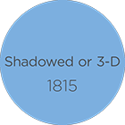
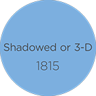


 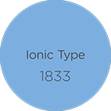
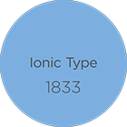
 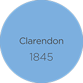
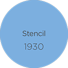
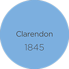
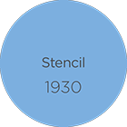

 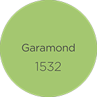
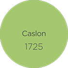
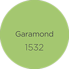
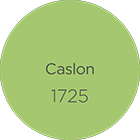

 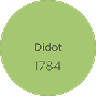
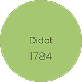